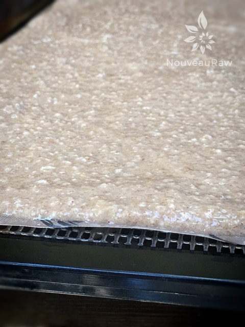
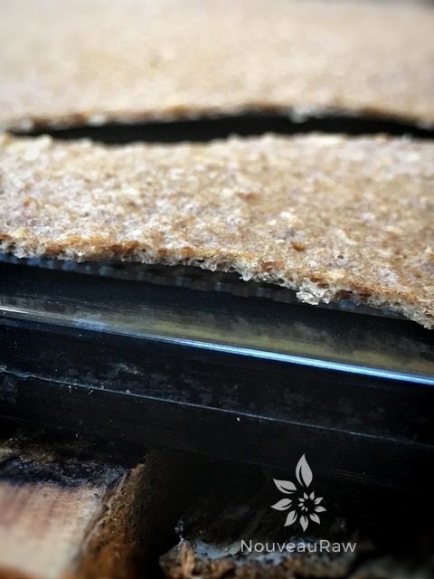
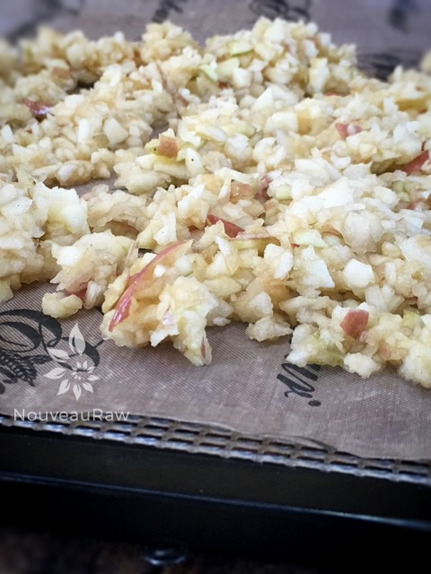
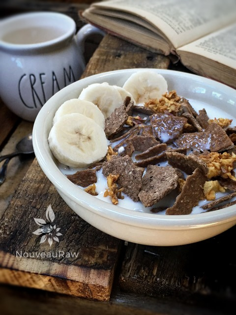
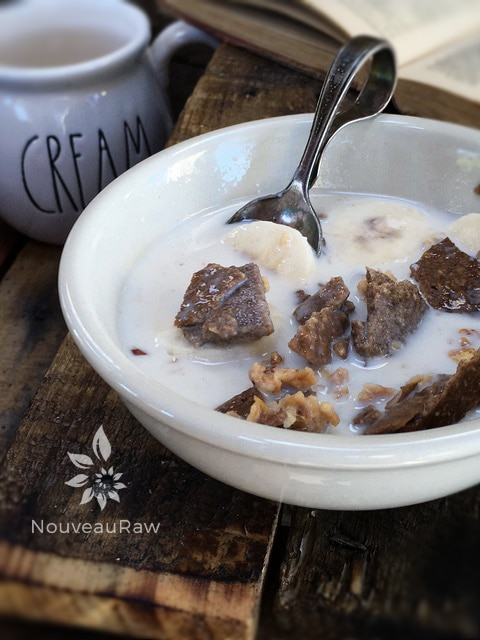
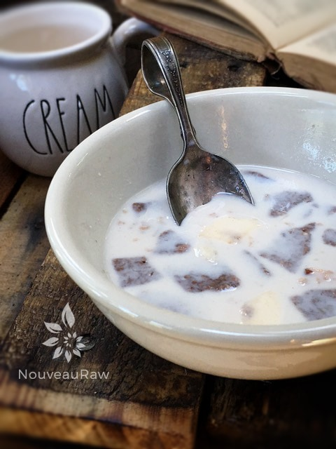
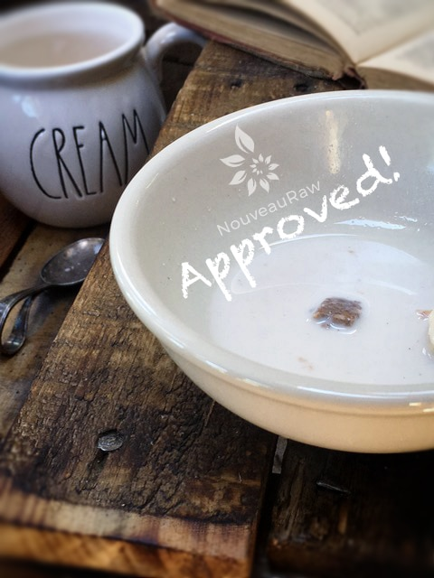

Apple Banana Craisin Bran Flakes
~ raw, vegan, gluten-free, nut-free ~
Today….was a historic day. For the first time in 4 years, I was able to enjoy an actual bowl of cereal. Remember the kind that came in a box, and you poured it in a bowl with milk? But before that even happened your hand would disappear into the box of cereal as you dug anxiously looking for a surprise toy inside?
Well, today I made a RAW cereal to where when I brought the spoon to my lips it was filled with a little bit of cereal, dried apple, Craisins, bananas, and a little bit of milk!!! It was heaven; I had almost forgotten what that “combination” in one spoonful tasted and felt like. It was simply incredible.
I use to spend Saturday mornings as a child in front of the TV watching cartoons. I was so enthralled with Fred Flinstone (thank goodness my time was long before Square Bob Sponge Pants) that I aimlessly shoveled spoonful after spoonful of cereal into my mouth.
This morning was a different story. I ate my cereal with awareness and such joy! As I savored each bite, I totally forgot that it was packed full of wonderful nutrients or that it was even RAW!
It is important to know that this cereal has been NRFDA (Nouveau Raw Food Determining Association) approved. The Soggy Cereal Test was conducted at Nouveau Raw Kitchens. Please see below. I hope you thoroughly enjoy this recipe and I would love to hear from you below in the comments. Many blessings, amie sue
Yields 8 cups when done
-
- 1 cup gluten-free rolled oats, soaked
- 1 cup gluten-free rolled oats
- 1/2 cup vanilla protein powder
- 1 Tbsp ground Ceylon cinnamon
- 1 Tbsp maca powder
- 6 bananas, ripe
- 4 cups chopped strawberries
- 1 cup dried cranberries or raisins
- 3 organic apples
Preparation:
- Take the 3 apples and core them. I left the skins on my apples. If you don’t have organic, peel them first to reduce the pesticides.
- Rough chop them and place them in the food processor and pulse till they are small bits.
- Don’t over process to where you start making them juicy.
- Place pulsed apples on the teflex sheet that came with your dehydrator and dry at 115 degrees (F) until the moisture is gone. I did this in the same time frame as the cereal.
- In the food processor, fitted with an “S” blade, combine the oats, protein powder, cinnamon, and maca. Process until all the ingredients resemble a fine powder.
- Add the bananas, strawberries, dried cranberries, and puree all ingredients until smooth.
- Spread the batter out real thin on the non-stick sheet that comes with the dehydrator.
- Dehydrate at 145 degrees (F) for 1 hour, then reduce to 115 degrees (F) for about 4 hours or until you can peel it off the teflex sheet.
- Peel from the teflex sheet and flip onto the mesh sheets that come with your dehydrator and continue drying for several hours or overnight, basically until crunchy.
- Allow to cool, then break apart into cereal flake sizes, mix in the dried cranberries and dried apples.
- Store cereal in an airtight glass container for a week or longer. I even store mine in the freezer for up to a month.
The Institute of Culinary Ingredients™
- Why do I specify Ceylon cinnamon? Click (here) to learn why.
- Are oats gluten-free? Yes, read more about that (here).
- Are oats raw? Yes, they can be found. Click (here) to learn more.
Culinary Explanations:
- Why do I start the dehydrator at 145 degrees (F)? Click (here) to learn the reason behind this.
- When working with fresh ingredients, it is important to taste test as you build a recipe. Learn why (here).
- Don’t own a dehydrator? Learn how to use your oven (here). I do however truly believe that it is a worthwhile investment. Click (here) to learn what I use.
Spread the cereal batter thinly on a dehydrator sheet.

Here it is dried. I tried to capture how thin it is.

Shredded apples were waiting to be dried.

NRFDA
(Nouveau Raw Food Determining Association) conducted a test at
Nouveau Raw Kitchens, The Soggy Cereal Test.
The subject: Apple Banana Craisin Bran Flakes.
Object: to see how long this raw cereal could stand up to almond
milk before getting soggy.
No animals were harmed in this test.
Results posted below.

Timer set for 5 minutes… still had crunch.

Timer set for an additional 5 minutes. Still had slight crunch.

The lab tech conducting this test ate the whole bowl of the subject matter.
Ending the test at 15 minutes. Still had a little crunch but
edges were softening. This concludes our test. :) Approved!

© AmieSue.com